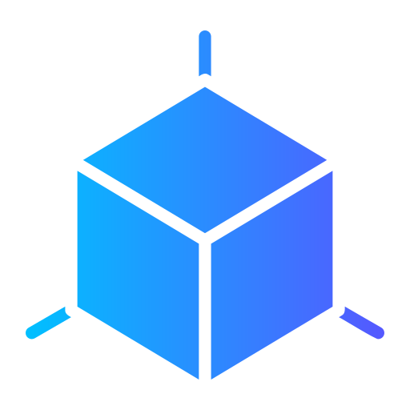

{{ year }}-{{ month }}-{{ date }} {{ hour }}:{{ minute }}:{{ second }} {{ strDate }}
Fan Control
Fan Speed

Current Model
Select Model
Square
Round Corner
Corner Cut
Estimated Wind Speed (m/s)
Measured Wind Speed (m/s)
Vortex Shedding Frequency (Hz)
Pause